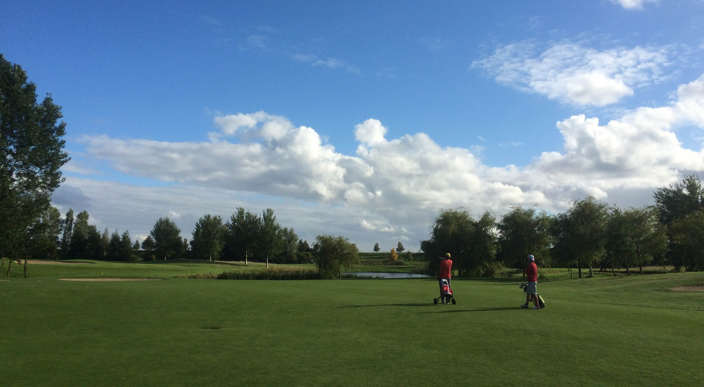

Persoonlijke coaching op de golfbaan
Golf is als het leven zelf en weerspiegelt wie je bent. Op de golfbaan toont de golfer hoe en wie hij is als mens. Tijdens het spelen van golf heb ik gemerkt dat ik me niet voor mezelf kan verstoppen: ik golf zoals ik ben. Die conclusie heeft mij er toe gebracht mijn werk als psycholoog te combineren met het golfspel. Zo ben ik begonnen met het geven van coachingsconsulten in de golfbaan. Daar merkte ik dat ik sneller inzicht kreeg in de ander en dat de golfbaan een uitstekende plek is om mensen op scherp te zetten.
Ik golf zoals ik ben heeft tot doel mensen inzicht in zichzelf te geven door gebruik te maken van het golfspel. Ik golf zoals ik ben helpt in de begeleiding bij persoonlijke groei, het overkomen van obstakels in het leven en het verkrijgen van meer inzicht in eigen functioneren en handelen. Door zelfinzicht slagvaardig in je leven.
Voor wie?
Ik golf zoals ik ben richt zich op het verhelderen van gedrags- en denkpatronen, het helpen beantwoorden van levensvragen en het overkomen van obstakels.
Bijvoorbeeld voor mensen:
- die worstelen met wat het leven van hun vraagt.
- die vastlopen op het werk of in hun prive-leven.
- die graag eens met een psycholoog zouden praten maar dit in een andere, uitdagende en inspirerende setting willen doen.
Ik golf zoals ik ben is bedoeld voor mensen die golf spelen en meer inzicht willen krijgen in hun persoonlijke sterke en zwakke punten. Het is primair gericht op slagvaardiger worden in het leven, werk of prive. Beter golfen kan een bijwerking zijn, maar is niet het doel van deze coaching. Een voorwaarde is dat iemand bekend is met de golfsport, en bij voorkeur een golfvaardigheidsbewijs of een baanpermissie bezit.
Hoe werkt het?
Ik golf zoals ik ben gebruikt golf als middel om in korte tijd tot de kern van uw vraag te komen. In elke ronde wordt een persoonlijk doel en een concreet golfdoel afgesproken.
Ik golf zoals ik ben biedt een uitgebreid coachings- of begeleidingstraject. Een standaard traject omvat vijf tot zeven ontmoetingen, waarvan in ieder geval een tot drie keer op de golfbaan. In compactere vorm is Ik golf zoals ik ben er in een pakket van twee en een half uur met inbegrip van intake, verkennende golfronde en korte nabespreking.
‘You get to know more of the character of a man in a round of golf than in six months of political experience’ David Lloyd George (1863-1945), Brits Liberal Prime Minister
In een kennismakingsgesprek, worden vragen en doelen op een rij gezet. Dit kennismakingsgesprek kan direct voorafgaand aan het spelen, maar kan ook op een eerder tijdstip, los van de golfronde, plaatsvinden.
De ronde kan gelopen worden op een par 3 baan (par 27), maar ook op een reguliere 9 holes baan. De tijd die we in de baan besteden is doorgaans 60-90 minuten (op een reguliere 9 holes baan langer, 2-2,5 uur). We lopen samen in een flight (twee-bal) om de golfervaring zo realistisch mogelijk te maken. Op diverse momenten in de baan zal ik vragen stellen, mijn observaties delen, tips of opdrachten geven. Direct na afloop volgt een kort evaluatiegesprek in het clubhuis.
Over Eelco
Ik ben gezondheidszorg-psycholoog met een passie voor golf. Die heb ik gevonden in Ik golf zoals ik ben. Een aantal jaar geleden stelde ik een cliënt voor om een sessie op de golfbaan te doen. Die dag werd me duidelijk dat de golfbaan een uitstekende plek is om op een actieve en prettige manier met iemand in gesprek te komen en kenmerkende karaktertrekken te leren kennen.
Psychologie is mijn vak, golf is mijn hobby. Ik hou van mijn vak en ben gepassioneerd golfer. In 1997 heb ik studie Psychologie afgerond aan de UvA en sindsdien ben ik werkzaam als consultant, onderzoeker en behandelaar. In 2006 ben ik gepromoveerd aan de Universiteit Utrecht op een onderzoek naar Posttraumatische Stress Stoornissen. Door mijn werk als behandelaar heb ik veel ervaring in het begeleiden van mensen bij een grote diversiteit aan problematiek. Momenteel combineer ik mijn werkzaamheden in de generalistische basis GGZ in mijn eigen praktijk (Psychologen Herengracht te Weesp) met mijn coachingswerkzaamheden voor Ik golf zoals ik ben.
Ervaringsgebieden:
- Stress en burnout
- Traumaproblematiek
- Depressie en angst
- Levensfaseproblematiek
- Rouw- en verliesverwerking
- Persoonlijkheidsproblematiek
- Aanpassingsproblemen
Eelco Olde is GZ-psycholoog, systeemtherapeut i.o. en EMDR practitioner. Huidige handicap: 17,3
Laatste ronde: Wilnis,
Zakelijk
Ik golf zoals ik ben biedt ook coaching en begeleiding voor bedrijven.
Daarin richt Ik golf zoals ik ben zich op de individuele medewerker met als focus het realiseren van individuele groei, het verbeteren van professionaliteit en communicatie en meer werk- en levensplezier.
Begeleiding vindt plaats op verschillende terreinen:
- Veranderingsprocessen (overgang naar nieuwe functie bijvoorbeeld)
- Stress en burnout problematiek
- Omgaan met perfectionisme
- Assertiviteit en het bewaken van grenzen
- Hoe haal ik het beste uit mezelf
- Conflicthantering
Procedure
- Kennismaking en doelformulering
- Bepaling van het aantal rondes en gesprekken
- Uitvoeren van opdracht tussentijds
- Evaluatie van de voortgang